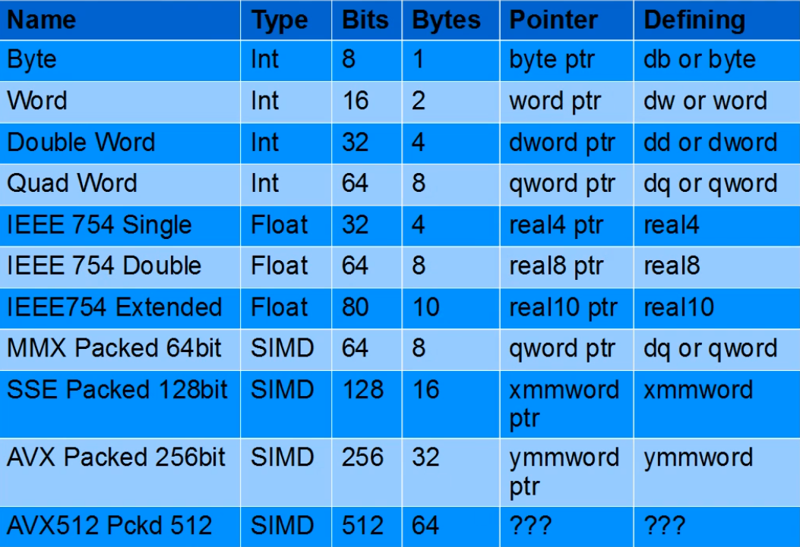

Pre-processor
-
equ(Equivalent to#definein C.)MAX_COINS equ 20 KEY_W equ 87-
It tells the assembler "wherever you see this name, substitute this value at assemble-time." It's essentially a find-and-replace that happens before any code is generated.
-
No memory is reserved, no address exists, it doesn't belong to any section at all.
| Assembler | Syntax | Example |
|-----------|------------------|----------------|
| NASM |equ|MAX equ 20|
| MASM |equ|MAX equ 20|
| GAS (GNU) |.equor.set|.equ MAX, 20|
| FASM |=orequ|MAX = 20|
| ARM (as) |.equ|.equ MAX, 20| -
-
struct-
NASM
-
struc/endstrucas shown
struc Player .x: resd 1 .y: resd 1 endstruc -
-
MASM
-
STRUCT/ENDS, and actually lets you declare instances inline
Player STRUCT x REAL4 ? y REAL4 ? Player ENDS myPlayer Player <> ; declares an actual instance in .data -
-
FASM
-
Virtual at idiom, more explicit
virtual at 0 player.x rd 1 player.y rd 1 end virtual -
-
GAS :
-
No built-in struct support at all.
-
You just use
.equmanually for every offset, which is exactly Pattern 1 from before. -
This is very common in Linux kernel source and GAS-based codebases.
-
-
Linker
-
global-
Makes a symbol visible outside the current object file.
-
Without it, labels are local to the file.
-
It's not required to be inside a section.
section .text _start: ; local symbol (not visible to linker) retglobal _start ; export symbol section .text _start: ret -
-
extern-
Declares a symbol defined elsewhere.
-
It's not required to be inside a section.
extern printf -
Assembler
-
bits <value>-
Tells NASM to emit
<value>-bit instructions — it controls how the assembler encodes opcodes. -
Without it, NASM defaults to 16-bit mode (
bits 16), so instructions likemov eax, 1might encode differently or not at all. -
rax,r8-r15,xmmregisters etc. are only valid in 64-bit mode. -
Note :
-
When you use
-f win64as your output format, NASM already implies 64-bit mode. -
Where bits 64 would matter is if you were writing a file that mixed modes, or targeting a raw binary format like -f bin (e.g. writing a bootloader), where NASM has no format to infer the mode from and defaults to bits 16.
-
Ex:
; bootloader — starts in 16-bit real mode bits 16 ; ... real mode code ... bits 32 ; ... protected mode code ... bits 64 ; ... long mode code ...
-
-
Ex :
-
bits 64-
NASM emits 64-bit instructions
-
-
-
Data Types (Data Definition Directives)
-
They are not CPU instructions. The CPU never sees them. Instead, they tell the assembler: “Emit these bytes into the output at this location”.
-
There's no type safety.
-
Signed and Unsigned comes down to what instructions you use.
-
-
They are not CPU instructions. They are handled by the assembler to lay out bytes in memory.
-
x86-64 is little-endian, so values are stored least-significant byte first.
-

-
About pointers :
-
In x64 all memory is flat, so all pointers are 64 bits wide.
-
Integer Data Types
-
db/byte-
define byte
-
1 byte
-
-
dw/word-
define word
-
2 bytes
-
-
dd/dword-
define double word (dword)
-
4 bytes
-
-
dq/qword-
define quad word (qword)
-
8 bytes
-
-
dt/tbyte-
80 bits.
-
10 bytes.
-
-
Using
dqdoesn’t guarantee alignment unless you explicitly request it:align 8 value dq 1 -
Example:
msg db "Hello", 0-
Equivalent to:
48 65 6C 6C 6F 00 -
Floating Point Data Types
-
dd/float(FASM alias) /.float(GAS alias) /real4(MASM alias)-
f32.
-
-
dq/double(FASM alias) /.double(GAS alias) /real8(MASM alias).-
f64.
-
-
dt/.tfloat(GAS alias) /real10(MASM alias)-
f80.
-
Only used with the x87 FPU (Floating-Point Unit); largely ignored nowadays.
-
You can't use
real10with SSE.
-
-
? /
real16-
f128
-
Not consistently supported
-
pi dd 3.1415927 ; float (32-bit)
piq dq 3.141592653589793 ; double (64-bit)
SIMD Data Types
-
Xmmword-
128 bits.
-
-
Ymmword-
256 bits.
-
-
Zmmword-
512 bits.
-
Reserve
-
resb-
reserve bytes
-
-
resw-
reserve words
-
-
resd-
reserve dwords
-
-
resq-
reserve qwords
-